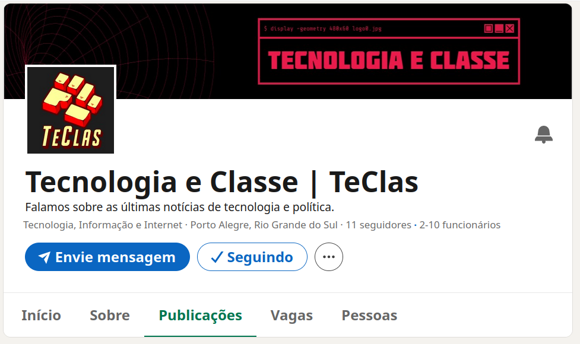

Notícias 25/03/24
TeClas no Linkedin

https://www.linkedin.com/company/teclas/posts
Humor & Piadas
Justiça proíbe Meta de usar marca no Brasil: uma empresa sediada no Rio Grande do Sul, também do setor de tecnologia, detém o registro da marca “Meta” desde 2008, causando transtornos para a empresa brasileira – desde que o Facebook mudou de nome, em 2021, a Meta brasileira já foi citada por engano em 143 processos judiciais que tinham como alvo a empresa norte-americana, sendo obrigada a participar de audiências apenas para explicar a confusão. Além da proibição, a Meta de Mark Zuckerberg também foi obrigada a divulgar em seus canais de comunicação que não tem relação com a Meta brasileira, com multa diária de 100 mil reais em caso de não cumprimento. As informações são do site Convergência Digital.
Linux atinge participação de 4% no mercado de desktops: o crescimento de 30% nos últimos 8 meses é significativo, considerando que levou 30 anos para o Linux alcançar uma participação de 3%. Fatores como sua natureza de código aberto, segurança, juntamente com melhorias significativas na estabilidade e usabilidade de distribuições como Ubuntu, Fedora e Mint, têm contribuído para tornar o Linux mais acessível a um público mais amplo. As informações são do site Linuxiac.
Instalações do Firefox e Brave registram aumento significativo em iPhones na Europa após lei que obriga tela para escolha de navegador nesses dispositivos: o Firefox viu o número de instalações subir 40% na Alemanha e 30% na França. O Brave registrou alta de 37% na primeira semana da medida, que visa limitar a tendência das Big Techs de promoverem seus próprios serviços e aplicativos em detrimento dos concorrentes. As informações são do site The Register.
Meio Ambiente e TI
Estudo aborda “inchaço” de páginas e aplicativos web não otimizados, sobrecarregando dispositivos de entrada: a análise destacou páginas como a do Wix, que fazem o download de 21MB de dados, levando até 33 segundos para carregar em alguns dispositivos. As plataformas de redes sociais também possuem um desempenho ruim, chegando a ser inutilizáveis em alguns casos. A pesquisa evidencia uma tendência no design de páginas na web que assume incorretamente uma disponibilidade constante de largura de banda e processamento alto, prejudicando a usabilidade em dispositivos menos potentes. As informações são do site Tom's Hardware.
Lixo eletrônico está se acumulando globalmente, com taxas de reciclagem em declínio: até o final da década, serão 82 milhões de toneladas acumuladas, com menos de 20% sendo recicladas, devido ao aumento do consumo, ciclos de vida mais curtos e opções limitadas de reparo. Os metais – incluindo cobre, ouro e ferro – representaram metade do lixo produzido, avaliado em 91 bilhões de dólares. Cerca de 50% é produzida na Ásia, enquanto a Europa apresenta as maiores taxas de reciclagem, superando 40%. As informações são do site TechXplore.
Movimento “Software Verde” está crescendo para combater impacto ambiental do desenvolvimento e uso de softwares: em 2040, o setor tecnologia da informação e comunicação pode ser responsável pela emissão de 14% de gases do efeito estufa, quase tanto carbono quanto o emitido pelos transportes aéreo, terrestre e marítimo combinados. A engenharia de software verde está sendo adotada por grandes empresas, como Google, Intel e Microsoft, implementando práticas para a construção de aplicações que usem melhor o hardware e computação disponíveis, um caminho de volta para as raízes de eficiência da disciplina. As informações são do site IEEE Spectrum.
Mapeamento Sindical MLC
https://docs.google.com/forms/d/e/1FAIpQLScso6ieYGSWYRn2TQoRZN9WuHSAFIkXcqdatNy8vnNdCE60qg/viewform
Demissões YouTube Music
-
Trabalham como terceirizados da Cognizant
-
Se sindicalizaram na Alphabet Workers Union
-
U$19 / hora =~ 3k dólares ao mês
-
Estavam em greve devido às políticas de retorno ao escritório (layoff disfarçado)
-
Google não considera os terceirizados como empregados, não negociou suas demandas com o sindicato
CI&T
https://www.youtube.com/shorts/S5Or8ZPPzaU
- Mudança do cálculo do PLR
- Ficou pior, mas potencialmente ficaria "melhor" se a empresa crescesse mais
- O problema é que o cálculo mudou pensando nos resultados piores (trapaceou para pagar menos)
- Resultado o PLR passou de 52% do salario a 3%
- Uma discrepância de impostos poderia ser responsável por uma diminuição dos resultados e o novo cálculo da PLR uma resposta direta a isso (especulação)
- É possível que aconteça uma greve na CI&T?
https://www.baguete.com.br/noticias/04/03/2024/vem-ai-uma-greve-na-cit
Yuzu
https://www.tecmundo.com.br/voxel/280561-yuzu-popular-emulador-nintendo-switch-fechado-processo.htm
Devin AI
Startup lança o que chama de “primeiro engenheiro de software baseado em IA” do mundo: o Devin, da Cognition Labs, é capaz de planejar e executar projetos de forma autônoma, contando com um terminal, editor de código e navegador próprio. O sistema também pode treinar suas próprias IAs para resolver problemas específicos. Desenvolvedores experientes podem tratar o Devin como um colaborador, permanecendo mais envolvido na tomada de decisões e design, ou simplesmente usá-lo como uma equipe de teste ou um especialista em documentação. Em comparação a outros modelos na resolução de problemas do mundo real com projetos de código aberto no GitHub, o Devin conseguiu resolver quase 14% das tarefas, seguido por Claude 2 (resolveu 4,8%) e GPT-4 (1,7%). Há, entretanto, preocupações sobre o uso de sistemas totalmente automatizados na manutenção de sistemas críticos, modificando uma base de código de maneiras que podem não ser totalmente compreendidas, com efeitos difíceis de serem previstos. O Devin se encontra ainda em acesso restrito à medida que a Cognition Labs aumenta sua capacidade. As informações são do site New Atlas.
https://www.cognition-labs.com/introducing-devin
Apple processada pelo DOJ nos EUA
Apple volta atrás e retoma funcionalidade de instalação de web apps na tela inicial de iPhones e iPads para usuários na União Europeia: a decisão anterior, de impedir a instalação de PWAs devido a dificuldades técnicas e preocupações de segurança, havia sido criticada por reguladores e grupos de defesa da web aberta, levando a uma investigação da Comissão Europeia. A reversão se aplica apenas a web apps baseados em WebKit, destacando a dependência de muitos cidadãos a aplicativos essenciais na região. As informações são do site TechCrunch.
Apple classifica a Epic Games como uma “ameaça” ao ecossistema iOS e encerra sua conta de desenvolvedor na plataforma: a ação seria justificada por violações contratuais passadas da Epic e impede que o estúdio de jogos lance uma loja paralela à App Store na União Europeia. A Epic alega que a decisão viola leis anticompetitivas. As informações são do site TechCrunch.
Apple reverte posição mais uma vez e restabelece conta de desenvolvedor da Epic Games: a decisão abre novamente caminho para a Epic lançar uma loja paralela à App Store na União Europeia. A mudança de posição da Apple ocorreu um dia após a Comissão Europeia anunciar uma investigação sobre a conduta e que poderia resultar em multas e sanções significativas. As informações são do site Ars Technica.
Pontos importantes:
-
Apple retira 30% de todas as compras dentro de aplicativos no iOS
-
Apple proibia o redirecionamento para sites de compras externas
-
Apple proibe a implementação de sistemas de cartão de terceiros no iOS
-
Isso afeta jogos (Fortnite), serviços de streaming (netflix, twitch, youtube, spotify) e outros tipos de aplicações (mas e um app de banco?)
-
Apple fez tratos específicos de desconto de taxas e/ou liberação de funcionalidade com alguns parceiros
-
Epic processou a Apple por isso e perdeu (mais ou menos)
-
Spotify tem o mesmo problema e reclama pra EU
-
EU dá uma dura na Apple
-
Várias empresas se junta para acusar a Apple (Meta, Match Group, X, Microsoft, Spotify)
-
DOJ está processando a Apple
Theo Rants
DOJ vs Apple
https://www.theverge.com/2024/3/21/24105363/apple-doj-monopoly-lawsuit
- Bloqueando a interoperabilidade com "super apps" e deixando a migração pra fora do iOS mais difícil
- Bloqueando modalidades inteiras de aplicativo como streaming de jogos (Microsoft)
- Sabotando protocolos abertos de mensagens sms*
- Limitando a funcionalidade de smartwatches e carteiras digitais de terceiros
A Apple diz: a gente é foda e a gente tá só pela inovação, vocês querem impedir a gente de inovar e querem que a gente fique igual a esse lixo que se chama Android.